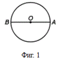

Беседа 3473 от 3877 · Беинса Дуно
Център и периферия
Отче наш.
„Махар Бену Аба.“
Имате ли зададена тема? – /Нямаме/.
Пишете тогава: „Отличителните черти на органическия и неорганическия свят“.
Като кажете органически и неорганически свят какво разбирате? В органическия има органи, неорганическия е без органи. Ще кажете: „В какво седи отличителната черта на органите?“ Вземете гръбначните същества, които имат костна система. Други нямат костна система. Мекотелите са без кости. Разликата между органическия и неорганическия свят е както между мекотелите и съществата с костна система. Да имате ясна представа. Ако пишете добър и лош човек, каква е разликата? Пишете и друга тема: „Разликата или отличителните черти на добрия и лошия човек“.
Да кажем има хора, които не са нито добри, нито лоши. Какви са? Има хора, които са неродени. Какви са те? Сега вие не може да си представите мисълта, че като се роди, тогава започва да съществува, мислите преди да се е родил не е съществувал. Той не е съществувал в тази форма, в която е сега, но той е съществувал в някаква друга форма.
Пишете друга тема: „Отличителните черти на ума и сърцето“. Може да намерите някоя книга да прочетете какво е писал някой. За захарта може да пише онзи, който я е опитал, поне една бучка захар да е опитал. Или някой сладък плод да е изял, ябълка или слива. Другояче без да е опитал няма да знае какво нещо е сладкото. Ако аз ви кажа на вас „сладка мисъл“. Може ли мисълта да бъде сладка? Или ако ви кажа „сладка постъпка“, може ли да бъдат сладки постъпките? Сладка ябълка разбирате, знаете, че може да я опитате. Ами сладката мисъл? Употребявали ли сте сладка мисъл? Някой път казвате: „Чиста мисъл“. Чистата дреха я виждате, но чистата мисъл как я виждате, че е чиста? По какво се отличава учения и неучения човек? Ученият и неученият човек се отличават. Има хора родени учени. Има родени неучени. Родените учени имат отличителни черти. Главата им се отличава от неучения човек. Ако е философ, отличава се, че е философ. Ако е поет отличава се, че е поет. Ако е музикант, отличава се, че е музикант, още преди да е станал той музикант. Ако е религиозен, преди да е станал религиозен има черти, които показват, че е религиозен. Житото не носи ли чертите си преди да е посято? Носи. Като се посее то проявява своите черти. Всеки човек сега трябва да се проявява такъв какъвто е. Ами ако се проявява такъв какъвто не е? Има ли хора, които се проявяват такива, каквито не са? Тогава бих желал да ми покажете един такъв екземпляр. Когато оцета се проявява такъв какъвто е, ражда ли се? Оцетът отпосле става оцет. Оцетът изкуствено го образуват едни малки бактерии. Всички опивателни вещества приспиват хората. Те имат едно свойство, че приспиват човека. Като влезе едно същество, което е опивателно, той е най-малкият затвор. Лампичките в ума ще започне да ги затваря. Хората, които се опиват от тях, умът не е така събуден и чувствата престават да действуват. В някои отношения са будни, в някои не са будни. Тогава казват, че човек се проявява такъв, какъвто е. Коя е първата основна черта, човек да се прояви такъв, какъвто е? Кое трябва да проявим сега? Детето, което е образувано в утробата на майката, то не диша, майката диша, то живее без дишане. Като че ли цялото тяло диша. Специалните органи за дишането не са турени в действие. Щом се роди, веднага се проявява дишането. Проплакването е първото дишане. Като се роди детето, всички очакват да запее. Ако детето запее като се роди, като види света да издаде първият звук, майката се радва, че то е певец. Щом не е певец изпъждат го из света навън. Дотогава, докато човек пее на земята е певец, може да живее. Щом престане да пее, заминава си. Защо плаче? Поддържа първия подтик. Изплаква детето и започва дишането. После вече иде пеенето, музиката, сегашната музика. Тъй като гледате живота някои от вас искате да живеете без да плачете. Че плачът ви е дело. Детето като заплаче, от радост заплаква. Вие заплаквате от скръб, не от радост. Вие казвате: „Нажалил се е той, тъжен е“. Често вие сте неразположен и сте тъжен, но не знаете защо сте тъжни. Не си знаете музикалния репертоар. Всеки ден като станете да имате един музикален репертоар. Например, вие вървите по пътя и ако не си дигате хармонично крака, ударите си крака в някой камък, казвате: „Ох!“ Какво означава в дадения случай „ох“? „Ох“ означава, че си ударил крака си, срещнал си едно съпротивление. И това съпротивление в тебе е усилило чувствителността ти повече, отколкото трябва.
Сега вие може да мислите, че тия работи не са важни. Вие имате предвид кога предметите могат да станат важни. Имате една система –
2 × 2 = 4
2 + 2 = 4
Като кажете 2 × 2 = 4 какво разбирате? Имаш две ръце, имаш и два крака. Щом имаш 2 ръце и 2 крака с две ще прекрачиш да ходиш. Две ръце имате, умножават ли се краката? Две ръце и два крака какво означават? Като събереш краката на едно място, какво показва събирането на краката, или какво показва събирането на ръцете? Казвате: „2 × 2 = 4 ; 2 + 2 = 4“. Имате количествена идея. Имате 2 тикви и още 2 тикви правят 4 тикви. Имате 4 тикви за ядене, имате 4 хляба пак за ядене. Имате 4 ябълки. Щом кажете 4 тикви, не разбирате малки като ябълки, но разбирате големи. Щом кажете ябълки, не разбирате големи като тикви, но малки. Двете има много съотношения. Двама души си приказват на едно място. Но някой път има някои въпроси, които не са интересни. Казваме „доброта“. По какъв начин може да направите добротата да бъде предмет? Значи един човек, който не диша добре не е добър човек. Един човек, който не може да яде добре, не може да бъде добър човек. Един човек, който не чувствува добре, не може да бъде добър човек. Един човек, който не мисли добре, не може да бъде добър човек. Един човек, който не може да гледа добре, не може да бъде добър човек. Вие казвате изобщо: „Добър“. Доброто има приложение. Или казвате „Две и две е четири“. Какво означава? Най-първо имате две семенца, нямат никакъв смисъл. Като турите като един елемент ще видите, че това добро трябва да го туриш в приложение. Ако не дишаш добре, не си добър човек. Значи доброто е един начин. Доброто се познава в дишането. Дишането е един Божествен процес. Да гледаш – това е един Божествен процес. Да слушаш – това е Божествен процес. Да обоняваш – това е Божествен процес. Да ядеш – това е Божествен процес. Да ходиш – това е Божествен процес. Да мислиш – това е Божествен процес. Да чувствуваш – това е Божествен процес. Ако ти в този Божествен свят не може да се проявиш такъв, какъвто си, значи ти не принадлежиш на този порядък на нещата, следователно, не може да имаш резултатите, които ти очакваш. Сегашните хора имат разхвърляни понятия за добрия човек. Щом човек не диша добре, не е добър. Казва: „Аз не може да мисля“. Какво ти препятствува? Ако кажеш: „Аз не може да дишам“, има вече нещо, което ти препятствува. Щом кажеш: „Аз не може да мисля“, какво ти препятствува? Или казваш: „Аз не чувствувам.“ Или казваш: „Аз не чувствувам тия работи“. Щом не ги чувствуваш ти не си добър. Добро е това, което чувствуваш. Като мислиш е добро, като гледаш е добро, като слушаш е добро. По който и да е начин това, което слушаш е добро. Ако вземете в музиката в първата октава „до“, или вземете в третата октава „до“, тия „до“ се различават. На картина може да се представи как се отличават. В първата октава житото е в хамбара. Във втората октава житото е посято на нивата. В третата октава житото е вече израстнало. В четвъртата октава то е вече цъфнало, а в петата октава то е вече узряло. Някой ще каже: „Докажи го това“. Зрялото жито е петата октава. Как е станало? Труден въпрос. Как ще вземеш „до“ в петата октава? Само узрялото жито знае какво нещо е „до“ в петата октава. Пет октави и пианото няма. Като дойдеш до петата октава, ще бъдеш като житото, за тебе страданията няма да са нищо. Онзи, който е узрял плод, и да го мелиш, не страда. Житото след като го смелят, опекат го, като влезе в човека пак израства, пак расте. Трябва някой път да направите опит, когато цъвти житото и когато зрее да минете през нивите, и да почувствувате онова ухание, което житото има. Много е приятно. Най-приятното ухание, което човек може да има, е когато житата зреят, или когато житата цъфтят. Човек трябва да мине през ниви да диша. Ако дишането ти е правилно, ще се спреш, ако дишането не правилно, ще погледнеш отгоре и пак ще се върнеш. Когато вас не ви интересуват нещата в света имате нещо анормално в дишането. Спреш се. Ако може да мислиш, дишането е правилно. Ако не те интересува, спреш се при един плод, не те интересува. Спреш се при една круша, не те интересува. Спреш се при човека да разрешиш въпроса, защо човек живее на земята. Най-после не питайте: „Защо човек трябва да живее на земята“, ами защо е дошъл. Какви бяха твоите подбуди да дойдеш на земята? Влизаш в училището за да учиш. Най-първо попитай себе си, защо си дошъл в училището? Питай: „Какво ще науча?“ Най-първо попитайте: „Защо дойдох?“ Отивам в училището. – Защо дойдох в училището? Тъй разглеждате този въпрос. Казвам: Какво ще научиш в училището? Защо дойдохте в училището – трябва да разрешите този въпрос. Ти не се питаш защо си дошъл в училището, но питаш, какво ще научиш. Ти не питай: „Защо седнах да ям?“, но питай: „Какво ще добия като ям?“ Не питай: „Защо седнах да ям и защо трябва да ям?“
Какво трябва да прави човек? Казвате: „Не може ли без ядене?“ Може и без ядене може. Щом не ядеш, в света не може да живееш. Щом не дишаш, в този свят не може да бъдеш. Щом не мислиш, в този свят не може да бъдеш. Щом не ходиш не може да живееш в този свят. Ама защо е така? Ми, че как трябва да бъде? То е философ без философия. Отива в училището, нищо не знае, казва: „Какво ще науча?“ То е философски въпрос. Този въпрос, като свърши учението тогава ще го зададе. Какво е придобил, то е философски въпрос. Ти още нищо не знаеш, занимаваш се с философия, какво ще придобиеш. То е философски въпрос. Най-първо ще отговориш, защо дойдох в училището? – Да види учителят си. „Чух, че имало един учител, дойдох да го видя“. В училището може да е дошъл да види зданието, може да е дошъл да види учителя, то е пак една наука. Той ще разбере едно нещо, че учителят не мълчи, но говори. После той ще научи, че учителят измерва от въздуха всяка дума. Тия думи по известен начин ги праща през въздуха, че като влязат в ушите на учениците, някаква магия прави, че учат. Развъртат се ушите на всички ученици. Тия малките деца, които бяха невежи, станаха учени. То е като дърводелец. Има материал, взема дъски, мери. Крои, току погледнеш изкара едно бюро, или една маса, или един стол хубав. Всичките столове не се родиха, той ги направи. Питаш: „Защо аз отивам в училището“. – Понеже аз съм неорганизиран материал, отивам при учителя да направи нещо от мене. Значи всички вие, които сте родени на земята сте минали в този процес. Щом влезеш в училището какво става? – Учен ставаш. Щом човек е дошъл на земята, вече влиза в училището. В природата законът е такъв: Щом стъпи кракът на човека в училището, назад не може да се върне. Докато си вън от училището, свободен си. Щом влезеш в училището, щом си туриш крака, една примка хване ти крака, изтегли те. Речеш навън да излезеш, не можеш, вързан си. Направете опит с осили. Турете един осил в гърлото, че да видите като се върне назад не излиза. За някои неща вие се питате защо е така? Това е философски въпрос. Питате: „Защо страдам?“ Този е философски въпрос. Няма разрешение, той не е за сега. Не се питайте така. Като свършите училището ще го разрешите. Щом си туриш крака във вряла вода какво ще стане? Казваш: „Защо страдам?“ – От врялата вода. Защо си тури крака преждевременно във врялата вода, питаш. Така. „Защо се радвам?“ – Защото си тури крака на време, затова се радваш. Страданието произтича, че си турил крака си в топлата вода преждевременно, а се радваш, понеже го тури навреме. Що е радостта? Турил крака си навреме в училището. То е радост. Отишъл си в училището преждевременно, то е скръб. Всичките хора са ученици в света, дошли са да се учат и всеки задава въпрос: „Защо съм дошъл в света?“ Казвам така: Да ядеш. – „Защо дойдох в света?“ – Да помирисваш работите. – „Защо дойдох в света?“ – Да слушаш. – „Защо дойдох в света?“ – Да гледаш. Най-елементарното е да пипаме. – „Защо дойдох в света?“ – Да го пипаме с ръката си. – „Защо дойдох в света?“ – Да ядеш, но няма да се спреш там. Думата ядене няма да вземете. С едно ядене няма да се свърши. В природата като те турят да ядеш, ти не може да се освободиш. Промеждутък има, но като влезеш не може да се освободиш. Всичките менюта, които са написани, от всичките трябва да си вкусиш. 30–40 години като живееш, от всичките ще вкусиш. Затуй, онзи, който с радост яде е здрав човек. Радостта е едно здравословно състояние, пък болестта е едно нездравословно състояние. Като ядеш с радост здрав си, като ядеш не с радост, свиваш веждите си, не си здрав, яденето не е добре сготвено. Само на болните деца дават специална храна. На здравите хора храната се отличава. Запример, някой плод, който е паднал от дървото на земята, като мине някое дете го взема и го яде. В живота плодът, който пада от дървото, той не е добре узрял. Всякога, когато в един плод има дефект, преждевременно е паднал. Виждали ли сте лимони да капят? Узрелите плодове остават, не капят. Ние сме свикнали и казваме: „Плодът трябва да капне“. Плод, който капе не е естествен. Плод, който не капе, той е за ядене. Онези плодове, които капят, в самото дърво има недостатък. Аз наричам този плод пометнат. Плодовете, които капят от дървото, са пометнати плодове. Плодовете, които не капят са здравословни. Ами една жена, която е слаба тя помята. Едно дърво, което не може да издържат плодовете да узреят, има някакъв дефект в него. Когато вие не може да издържите една мисъл, едно чувство, то е болезнено състояние. В здравословното състояние всяка мисъл е приятна. Щом искате да се освободите от нея, има нещо нездравословно. Някой казва: „Да се освободим от злото“. Как ще се освободите от злото? Като влезе плодът в устата ти, забиеш си зъбите, откъснеш от плода и казваш, че си добър човек. Ти добър човек ли си? Хванеш хляба, откъснеш от него, казваш, че си добър човек. Трябва да знаеш колко сантиметра да си забиеш зъбите. В яденето математически е определено колко трябва да си забиваш зъбите. Ще те съдят, че си си забил зъбите повече. По какво съдят един ученик в музиката? Не е виноват, че пее, не е виноват, че яде, но е виноват, че не взема вярно тоновете, че забил зъбите повече или по-малко, затова е виноват, не яде правилно. Хората са виновати, че не ядат правилно. Всеки човек, който не яде правилно има закон. Ти казваш: „Да се наям“. Ти не знаеш още да ядеш, пък с философия се занимаваш. Казваш: „Трябва да ям“. То е цяла наука. И в музиката казвате: „Да пеем“. Но пели ли сте вие? Слушах ви първата песен, която запяхте. Тя беше „Фир-фюр-фен“. Пяхте: „Мисли, право мисли“. Какво значи правото мислене?

Казвате: „Що е любов?“ Определяте думата „любов“. За какво ни служи? Любовта е това, което преодолява всичките мъчнотии в живота. То е мощна сила, в която като влизаш и като излизаш всичко лесно става. В този смисъл в живота, за любовта няма нещо невъзможно. Не туряйте идеята, че всичко изведнъж трябва да стане. Всичките неща, които вървят по закона на любовта се преодоляват. Сега трябва да направите един опит. Правили ли сте опита да влезете до центъра на земята? Где е дефекта на кръга? Едната част е малко издадена. Към коя посока? В даденият случай диаметърът показва две противоположни движения. Едно на друго са противоположни. Влизане към центъра на земята и излизане от центъра, образуват този диаметър на земята. Сега изчисляват диаметъра на земята. Но кои учени хора има, които са слизали до центъра на земята и са излизали. Знаете ли сега какво е налягането в центъра на земята? Предполагат учените хора, че тия вещества са по-гъсти от диаманта. Тия вещества, които са в центъра на земята считат, че са в разтопено състояние. Сега да оставим,това са философски въпроси. Какво е състоянието на земята вие оставете този въпрос, защото онези, които са направили земята, тях ги интересува. Какво е състоянието на земята не е за нас. Нас ни интересува онова, което става на повърхността на земята. Ония ученици, които трябва да изучават външната повърхност, не онова, което е скрито. Отвън са хиляди работи написани. Този център показва началото, когато земята е била създадена, каква е била. Земната история е написана. Земята си има история на своето развитие. Някои искат да знаят какво нещо е земята. Една прекрасна история има земята. Вие като срещнете един човек, научно изследвате, вие искате да проникнете в него. Че човек мяза на земята. Той не иска вие да прониквате. В дълбочините на човек, какво ще научиш? Ако един човек би слязъл в центъра на земята и се върне, втори път няма да помисли да слиза. Като му кажеш за това той няма да иска да мисли. Вие ще мязате на онзи американец, който иска да се пусне от Ниагарския водопад с една бъчва. Като мислил, мислил, намислил да влезе в една бъчва, затворили бъчвата и я спуснали от водопада. После го намерили в безсъзнание и като го извадили от бъчвата казва: „Втори път не влизам“. След като го въртял водопада казва: „Втори път не искам да влеза“. Питали го: „Какво чувствуваше в бъчвата?“ Казва: „До известно време чувствувах, най-първо ме въртеше нещо, после не зная какво стана вече“. Но впечатленията на това въртене на този водопад и да опита човек това, са две различни неща. Та казвам: За в бъдеще, когато хората завършат своето развитие ще станат много напреднали. Всяка една душа, която завърши своето развитие на земята, трябва да мине през центъра на земята. Като завърши своето развитие и вземе диплом, че е завършила всички науки, тогава ще мине от повърхността на земята, ще влезе до центъра и ще излезе от другата страна, по диаметъра и ще мине. По този диаметър ще излезе и ще тръгне за своето отечество. Тъй щото един ден ще минете, но трябва да бъдете много учени хора. Като слезете ще видите, че земята има несметни богатства. Сега да влезе човек в земята трябва да бъде като сляп човек, като глух, който няма да чувствува. То ще бъде безсъдържателно. Като че пътуваш вечерно време през някаква красива местност и нищо няма да видиш.
Какво означава в дадения случай две? 2 – е радиус. Едно слизане, плюс едно е равно на две. За да се обоснове какво означава две. То е единият радиус, който отива към центъра на земята. Този е дълбок въпрос. На какво е равно две? Равно е на две единици. На какво е равна всяка единица? Първата единица е първият радиус, който влиза в центъра. Втората единица е вторият радиус, който излиза от центъра на земята. Единият радиус е единица. Различен е от другия радиус, на другата единица. Две единици образуват диаметъра на земята. Следователно, ако ти си научил радиуса на слизане в центъра на земята и ако си научил радиуса, по който се излиза от центъра на земята към повърхността, тогава вече си усвоил две единици. Този резултат го знаеш, имаш вече диаметър. Изследвал си на какво е равен този диаметър. Едно слизане и едно излизане от центъра на земята. Ти си научил какво нещо е диаметър на земята. Ти си научил: Едно плюс едно е равно на две /1 + 1 = 2/. Ти си силен човек. Или казвате: „Едно плюс едно е равно на две /1 + 1 = 2/“. Едно житено зърно и още едно житено зърно – две житени зърна. Или имате един лев и още един лев, те са два лева. Но това са количествени понятия, няма нещо реално вътре. Ако имате това движение, слизане от повърхността към центъра и излизане от центъра, тия две единици образуват две. Опитността, която ще изнесеш, вече имаш едно знание, което ще ти бъде потребно.
Сега засягам един въпрос. Един петел един ден се качил на купището и като ровил изровил един голям диамант като гълъбово яйце. Казва: „Защо ми е тази пущина? Да беше поне едно зрънце да го клъвна.“ Той не го кълве, но го къшка. Не знае, че в този диамант за всичките петли в неговото време имаше за ядене, да ги нахрани с години. Казват си някои от вас: „Мен не ме интересува това“. Ти си петел – едно плюс едно е равно на две /1 + 1 = 2/. Казвате: „Тия работи не ми трябват. Мене ми дайте онова, което е за сега“. Това показва, човек, който не постъпва разумно. Да влезеш в центъра на земята и да излезеш, ти си още петел на купището, само житените зърна те интересуват, скъпоценните камъни не те интересуват. Казва някой: „Мен не ме интересува духовния свят, че няма какво да те занимава“. Ти си петел, пееш на купището. Като намери петелът някоя глистя ще я клъвне. Скъпоценните работи него не го интересуват. Този човек няма какво да го занимава, но що е този скъпоценен камък. Казва: „Мене не ме интересуват скъпоценните камъни, понеже щом ме интересуват трябва да ги туря на врата.“ Петелът казва: „Аз съм свободен човек, не искам да нося тия яйца по врата си.“ Да туря 1, 2, 10, 15 диаманти на врата си. Ако аз ви дам на вас един диамант като кокоше яйце, и да го носите на врата си, то не е удобно. Или ако турите този диамант върху перото, с което пишете, не е удобно. Как ще пишеш? Когато перото е свободно от диаманта по-лесно се пише. Така да се маха това яйце на перото, няма практическо приложение. Обаче скъпоценните камъни те имат особено пречупване на светлината. Когато човек изучава светлината, те са потребни. В скъпоценните камъни може да се проучат свойствата на светлината. Скъпоценните камъни задържат известна светлина. Те са били учени, задържат известно количество светлина, за която ние нямаме понятие и затова са станали скъпоценни. Най-хубавото в скъпоценните камъни, е направено от светлина. От светлина са направили своята дреха. Казвам: Когато ние в живота, извлечем най-хубавото, като диаманта от знанието, ще направим един такъв диамант. Туй знание, да не бъде преходно знание, но знание на което можем да разчитаме, то е истинското знание в света. Всеки човек е човек до толкоз, доколкото има истинското знание, което може да ни помага. Истинското знание във всички случаи помага. Онова знание, което не е истинско всякога не помага. Аз съм наблюдавал, има деца, които кучета ги хапят. Особено кучетата обичат да хапят деца. Имам едно наблюдение. То беше отдавна. В Провадийско в едно село, в южната част към Камчия, едно лято прекарах. Беше дошло едно семейство, имаше едно момиче, около 6–7 години. Ходило да се разхожда, излязло едно куче, мачкало го, търкаляло го и го ухапало на доста места. Казвам: На кое място те ухапа? – На еди кое. Първият път в мен се зароди едно желание да дам едно възпитание на кучето. Казвам: Да го ухапе веднаж разбирам, но да го ухапе много пъти. Защо го хапе на много места? Аз всеки ден ходех нататък, но след това аз не видях повече кучето, като че изчезна туй куче. Не можах да го намеря да му дам урок. Казвам: Има деца, които кучета не ги хапят. Има един плач, като излезе кучето, като викне детето, като запее, тогава кучето се спре и се върне. Онези деца, които не пеят така, кучето ги хване, забие си зъбите. Кучето ще ги хапе. Казва: „Защо не пееш?“ И действително туй момиче, което го хапа, то не можеше да пее, отпосле се научи. Аз имах случай след това да видя, тя живееше въвъ Варна и не можеше да вземе два тона верни. Наместо да дам урок на кучето, защо я хапало, разреших въпроса защо я хапе. Защото не пееше. Ако туй момиче пееше нямаше да го ухапе. Но като порасна научи се, в хор влезе да пее. Дотогава два тона не можеше да вземе. Та аз разреших въпроса. Исках да зная защо кучето я хапе. Този професор не се яви да ми каже защо я хапе, аз разбрах после. Наблюдавал съм деца, като кресне, като запее, кучето се спре. Който не пее, хапе го. Аз вадя друго едно заключение в живота. Сполетява те някое нещастие в живота. Ти не мислиш правилно. Нещастието е едно куче, което казва: „Ти защо не мислиш?“ – Ако мислиш другояче погрешка може да направиш. Кучето, което се затича към тебе, то е вече погрешка. Ако му запееш, то ще спре и ти знаеш как да поправиш погрешката. Щом знаеш да поправиш погрешката, ти знаеш да пееш. Щом не (знаеш) да поправяш погрешката, не знаеш да пееш. Всеки човек, който не знае да поправи една погрешка, той не трябва да я прави. Всеки, който поправи една погрешка може да я направи. Защото, като направиш една погрешка показва, че си силен да направиш погрешката. Сега къде е погрешката в едно дете? Морално в какво седи погрешката? Що е морал? – Моралът е един стражар, който те учи да не правиш престъпление. Аз наричам всичките морални правила – стражари. Ти да не правиш онова, да не правиш това. Минава едно дете, вижда зрял плод, иска да си откъсне. Туй дете откъсне плода. В какво седи престъплението? Ако тази една градина, в която човек посадил туй дърво и то за пръв път дава плод, на този плод пише, този, който го садил. Това дете трябваше да намери стопанина на градината и от него да поиска. То без да тури никакво усилие да работи иска да участвува в плода. В природата, там гдето не си участвувал, нямаш право. Какво означава нямаш право? – То е много естествено. Този радиус слиза в земята, поиска ти се на тебе и ти да влезеш в центъра на земята. Може ли, туй дете, което иска да изяде плода, то се намира в центъра на земята. За него е невъзможно да слезе, няма тази наука. Този плод не е заради него. Ако го яде прави прегрешение. Ако човек преждевременно слиза в центъра на земята, не е готов, не е брониран. Онези, които искат да влезат в океана на хиляда–три хиляди метра, правят цели кълба, приготовляват ги по особен начин, за да може туй кълбо да издържи на налягането на водата. Не е така лесно да влезеш в океана на 1000–2000 метра дълбочина. Мислим, че е играчка. То е много сериозна работа. Че казвам: При сегашните условия ние се намираме при някои трудности. Що е едно страдание в света? Целият свят е проникнат с известни сили, течения, които се отличават по техният ампераж и волтаж. Може да е 100, 200, 300, 400, 500, 1000, даже може да е милиони волта напрежение. Да кажем, ако ти попаднеш под едно силно течение. Въздухът се движи със 150 километра, ако попаднеш в такова движение, можеш ли да устоиш? В Америка често стават такива силни течения, че ако трен срещне такова течение, се връща назад. Близо с 80, 90, 100 километра го връща бурята. Самият трен се движи със 100 километра бързина, и като срещне въздушното течение, то го бута назад. Каква е бързината на туй течение? Понякой път може да обърне и вагоните. И в океана се срещат такива бури. В Индийският океан, цяла една английска флота изчезна в такава една буря и досега не са я намерили, къде отишли тия параходи. В природата има такива силни течения, гдето всичко онова, което човек е създал, може да се превърне на прах. Не мислете, че е безопасно в живота. Англичаните са по-внимателни. Изучават бурите в океана, да не попадне човек в някое течение. Най-мощните параходи може да пострадат. Където бурята не е в голям мащаб могат да се отклонят. Та казвам: Често в живота пострадваме от такива течения, понеже незнаем, че в тази посока върви туй течение. Трябва да заобиколим. Щом имаш голяма мъчнотия трябва да я заобиколиш. Земята е валчеста. Защо е валчеста? – Валчеста е по единствената причина, че големите мъчнотии може да ги избегнем по пътя на кривата линия. Всичко в света не може да разреши по права линия. Казвате: „Праволинейно“. Опасно е. Мислиш ли, правата линия е много дълга? Правата линия е най-късата линия. Ти предполагаш, че правата линия е много дълга, то е заблуждение. Ако е късо разстоянието ти можеш да минеш от едната точка в друга и от другата точка пак да образуваш права линия. Няма да мислиш, че туй разстояние ще го минеш в права линия. Някой път правете опит да видите дали вървите в права линия. Никога не се върви в права линия. Ще видиш, че вървиш зиг заг. Много мъчно е да се върви по права линия. Защото голямо сгъстяване има вътре. Да се научи човек да ходи правилно трябва да изучава правите и кривите линии, отношенията между правите и кривите линии. Тогава трябва да знаете, коя мисъл е права и (коя) мисъл крива. Не говоря за кривите мисли. Мислите, които са пластични, вървят по крива линия. Определени мисли има, които вървят по права линия. Да върви човек по права линия трябва да има голяма мощ. Много силен трябва да бъде човек, който върви по права линия. Защо тогава ви е страх? Ако те изведат на едно високо място, което е хиляда метра височина, ако те поискат да те пуснат, защо в тебе се заражда страх? – Ти се смущаваш да вървиш по правата линия. Една птица, която има криви крила, ни най-малко не я е страх. А ти се смущаваш. А тебе те е страх. Тя е господар на положението. Всякога, когато човек не е господар, плаши се. Особено, ако са перпендикулярни линиите. Затуй сега се занимаваме с хоризонталните прави линии. Плоскостта казва по права линия ходи. По права линия в колко посоки? По перпендикуляра на правата линия може ли да ходиш? Ако те пуснат като парашутист да слезнеш, веднага ще се научиш. Човек може да слезе с парашут. Но да имаш такава силна мисъл, че като те пуснат отгоре, като помислиш само, да се освободиш от закона на теготението. Ако падаш отгоре не си свободен от този закон. Да се освободиш от всяко желание на земята и ако остане само една мисъл на земята ти ще слезеш полекичка. Ако вие имате много желания, вие ще паднете на земята. Като падате да няма никакво ваше желание, да остане само една мисъл. Не само това може да направите, но може да направите и друг опит. Ако концентрирате вашата мисъл в стаята може да се дигнете 4 пръста. Като се освободите от всичките желания на земята и остане само едно желание на Любовта, 4 пръста ще се отдалечиш от земята. Това е голямо постижение да може да се дигнеш на 4 пръста от земята. Ако с един пръст може да се отделиш от земята показва, че твоят ум е много силен. Вие сега искате да бъдете силни хора. Казвам: Можеш ли един сантиметър от земята да се дигнеш? – Ти си силен човек. Вие поне един милиметър може ли да се вдигнете? Не може и един милиметър да се дигнете. Ако се дигнете няма да можете да ходите. Понеже няма противно движение. Ще започнете да мислите за оня свят и ще залитнете. Старите хора залитат понеже не искат да се отделят от земята.
Ние идваме в разсъжденията до мисли, които мязат на класически песни. Допуснете, че аз пея една класическа песен за един юнак, който носил два тона на гърба си. Какво ще ви ползува тази класическа песен, че някой герой е носил два тона на гърба си? Какво ще ви ползува тази песен? Ако пее за една песен, за едно кило, едно кило сила ще ви предам като пея песента. Ако вие сте болен, неразположен, слушате тази песен, ще усетите подобрение, ще имате по-добро разположение. В пението понякой път вие печелите, някой път губите. Пението, в което изживявате повече, придобивате нещо. Всякога когато пеете трябва да остане една придобивка във вас. Пеене, в което няма придобивка, не е естествено пеенето. Една музика има, която руши човека. Това са дисхармонични тонове, губи се от силата. Сега ние засягаме тия въпроси, но това е теория. Ако имаме една школа по музика, да видим колко ще спечелиш. Трябва да имаме едни везни. Да кажем влизаш малко неразположен. Ако имаме точни везни да се претегли човек, когато е неразположен и след (това) да се претегли когато е разположен, колко тежи да знае при разположението каква тяжест има. Някой път в здравето има четни числа. Има хармония в четните числа. Има хармония на нечетните числа. Да кажем ти се претеглиш. Ако числото е нечетно, то е болезнено състояние, ако е четно е хармонично. Има едно здраве, което е обосновано върху нечетни числа, а има болести основани върху четни. Тогава наричам, че болестите са минус, а здравето е плюс. Болестта е, която започва с плюс, а здравето с минус. Тогава имате минус плюс, минус плюс. Вие търсите центъра на нещата. Когато отрицателните и положителните сили в света си хармонират, човек върви по права линия. Щом имаш неразположение в себе си, ще търсиш противоположното на туй неразположение и видиш какво ти липсва. Щом го намериш двете числа се уравновесяват. И във вас неразположението изчезва. Някой път има радост. Радостта е признак, че сте придобили нещо. След всяка радост ще дойде една меланхолия. Има радости постоянни, устойчиви. Има радости за една–две минути. Това са неустойчивите радости. Не е обоснован на някакъв вътрешен закон. Пазете се. Когато дойде радостта постоянна ли е или преходна? И скърби има, които са постоянни и непостоянни. Нещо ви бодне. Често тия бодежи, които имате по тялото и в сърцето, вие се плашите от тях – това е преходно болезнено състояние. Може в разни области на тялото да се намира. Както и да определяте, такива електрически излишества има. Насъбрало се туй някъде, туй електричество идва в съприкосновение с външното и като се образува контакт, образува се бодване. Всякога става такова убождане. Това се казва електрически товар. Някой път този товар излиза навън. Някой път влиза вътре и тогава се образуват известни болезнени състояния, които хората мислят, че имат някаква органическа повреда. Погледнеш, направят известен разрез. А то е една малка болка, която произтича от атмосферното електричество и органическо електричество. Има мисли постоянни. Има мисли преходни. Тези мисли няма да останат във вас. Вие имате едно настроение, туй настроение няма да остане във вас, то не е ваше. Туй настроение е чуждо, което е дошло във вас отнякъде. Трябва да разчитате във вас на онова, което може да остане във вас по-дълго време. Има преходни желания. И те са полезни, но някои са мимолетни. Животът не може да се съгради на тях. Те са като движението на реката, като водата, която тече. Сега някой път вие искате да схванете живота, да го концентрирате в себе си. Вие оставете течението на живота да тече през вас, не да го обуславяте. Този живот като тече във вас той ще ви остави туй, което животът може да ви остави. То е заради вас. Вие не може да концентрирате целия живот. Този живот ще мине покрай вас и ще остави това, което ви е потребно. Вие искате да го турите под известна рамка, там правите погрешка. Вие искате да бъдете здрави, стойте на чист въздух и дишайте. Не искайте да завладеете целият въздух, той не ви е потребен. Този въздух е в движение. Вие сте в природата дето се грижат за вас. Въздухът ще мине през милиарди същества и ще им даде онова, от което те се нуждаят. Казвам: Когато вие искате да имате нещо само заради вас вие ще направите една погрешка. Ти не може да седиш и целия ден да ядеш. Може да ядеш, но стомахът ти няма да бъде в състояние да свърши тази работа. То е доста деликатна работа, която трябва да се свърши, цял един процес трябва да стане. В стомаха има около 10 милиона клетки, които работят. Ако вие ги накарате целия ден да работят, тогава ще ви наложат една глоба. В природата съществува един закон – не може да оставиш целия ден да работят клетките на стомаха. За едно ядене клетките може да работят час, час и половина, после трябва да си почиват. Като вземеш обяда, пак ще работят 2–3 часа. Ако вие заставите тия клетки като ядете, да работят повече вие ще се осакатите. Същото нещо е и в ума. Някой иска да накара ума си да мисли повече. Не може, промяна трябва да има. И в музиката е същото – човек не трябва да пее целия ден. Ти в 15–20 минути може да научиш повече, отколкото ако цели 20 часа пееш. Във всичките неща ние имаме едно безразборно разбиране на нещата. Колцина заболяват. Става една особена реакция, влошаване на нервната система и така заболяват много ученици. Много ученици заболяват, понеже напрягат мозъка си, искат да разрешат вселената крайна ли е или е безкрайна. Че какво разбирате, че вселената е безкрайна? Две определения дават. Под „безкрайна“ разбират всяко нещо, което има начало, а няма край. А под „крайна“ разбират нещо, което има начало и има край. Под „край“ какво разбирате? След като си работил нещо, работил си 4–5 часа, оставиш работата, почиваш си, то е край на работата. Това е смяна. После пак започнеш отначало, пак смяна. Смяна на енергиите има в природата. Учените хора искат да разрешат въпроса за безкрайното. Безкрайността е почивка. Тях ги е страх от свършването на света. Свършването на света е почивка, после пак ще се започне отначало. Светът вечно съществува, има смени. Започваш една работа, след туй трябва да си починеш. Като почиваш да ти е приятно. Като мислиш и като престанеш да мислиш да ти е приятно. Щом започваш с приятност и свършваш с неприятност, процесът не е правилен. Дишането не е правилно. Дошъл човек и казва: „Защо дойдох на земята?“ Да се научиш да дишаш, да се научиш да ядеш, да се научиш да възприемаш уханието правилно, да се научиш да слушаш. Дошъл си на земята да се научиш да гледаш. Дошъл си на земята да се научиш да мислиш, това са елементарни работи. Дошъл си да се научиш правилно да чувствуваш, правилно да действуваш. Казва: „Защо дойдох на земята?“ Най-първо да се научиш да ядеш. Като се научиш да ядеш кой е вторият процес? След като се наядеш трябва да платиш. Ето, аз какво разбирам: Отивам като един пътник и нямам пари. Нахранят ме хората. Те отиват да жънат и аз ще отида с тях да пожъна малко. Като пожъна ще кажа: Много съм ви благодарен за яденето. Те ще кажат: „И ние сме много благодарни“. Наям се и веднага си замина, това е неразбиране. Като се наядеш ще идеш да пожънеш, те ще те заведат на мястото дето излиза хляба. Ще се наядеш и ще идеш при източника и ще кажеш: „Искам да се отплатя“. Вие сега искате да минете контрабанда, такива неща в природата няма. Контрабанда, това е престъпление. За всяко нещо в природата има хармоничен закон.
Та казвам: Ще се повърнем към първата мисъл – Плачът е музика. Детето, което плаче казва: „Аз може да живея на земята“. Детето, което не заплаква казва: „Земята не е заради мене“, и то си заминава. Затуй бащата и майката се радват на децата, които плачат. Като плачат те се раджат, но и много като плачат не е на място. По същия начин, когато говорим за страданието, ние разбираме една смяна. Под страдание не разбираме всякога болка, едно нещо не може да го обясниш, страдаш заради него. Страдаш, че нямаш обуща или страдаш, че кракът ти е влажен. Мислиш, че като се овлажни крака, има опасност. Като е овлажнен, той не се простудява. Стига да не стане промяна в атмосферата, да се измени топлината.
Ние, съвременните хора, може да урегулираме живота си. Когато остане само една мисъл в човека, силите на Любовта регулират мислите на човека. Силите на Любовта регулират чувствата и постъпките на човека, това е правилен живот. Всяка мисъл трябва да се регулира от Любовта. Не казвам сега разумна Любов, защото Любовта е, която подбужда ума към мисъл. Без Любов умът не може да мисли. Не че умът предизвиква Любовта. Любовта предизвиква мисълта. Във всички неща мисълта е основна. Ние мислим, че като мислим, Любовта иде. Това е крива мисъл. Любовта произвежда човешката мисъл, произвежда човешките чувства и движения. Всичките процеси ги произвежда Любовта. Като изучаваме законите на Любовта, ще дойдем до живота, понеже животът е един резултат. Първият резултат на Любовта е животът. Живот без Любов остава непонятен. Там ще имаме ред страдания, ще ни бъде приятно и неприятно. Не е лошото в пеенето. Когато човек не знае да пее, то е лошото. Не е виноват човек, че пее, не е виноват човек, че живее. Виноват е, че не знае да живее добре, не разбира добрия живот. Да знаеш да пееш, значи да коригираш постоянно погрешките. Един музикант често коригира погрешките. Не трябва да туряме такова определение, че погрешката е вредна, че е лоша. Поставете, всичко да поправим. Много лесно е да вземеш „ре“. Ако го вземеш неверно, много лесно е да го поправиш, няколко трептения ще измениш.
Казвам: Радиусът това е движението от повърхността към центъра. Щом влезеш в центъра на мъчнотията, и ако от тази мъчнотия не може да излезеш към повърхността, ние нямаме знание. Ако влезеш в мъчнотията, силни сме. Ако не влезем, слаби сме. Който може да влезе в центъра на земята и да излезе на повърхността на земята, той е силен човек. Тогава ще направите опит. Като дойде една мъчнотия тя е в центъра. Мъчнотията аз считам една окръжност. Има свой център. Ако можеш да влезеш в центъра на тази мъчнотия и да излезеш из центъра навън, ти си силен човек. Ще придобиеш нещо. И в радостта е същият закон. Докато ти не влезеш в центъра на една радост и не излезеш навън от радостта, тя ще остане непонятна. Трябва да разбираме радостта и скръбта и тогава ще имаме блаженство, което не е опитано.
Само светлият път на Мъдростта води към Истината!
В Истината е скрит животът!
ХХI година.
8 лекция на Младежкия окултен клас,
държана от Учителя на 14. ХI. 1941 г., петък, 5 ч. сутринта.
София – Изгрев.